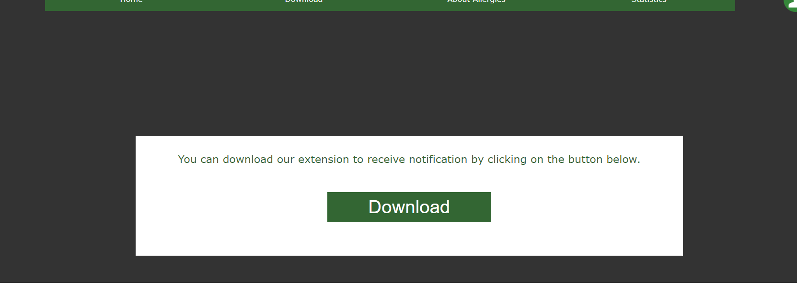
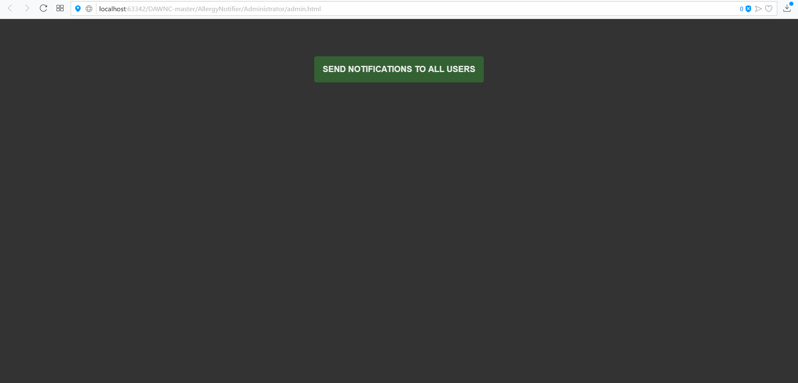

SEAL
Github authors
User Guide
The first time you need to log in with your facebook account after pressing the login button in the middle of the page.
After that, in the middle of the page in the log-in place, the logout button will appear, and once the application will ask for permission to access our location. It is preferable to accept to share your location with us, otherwise we won't be able to send you notifications.
If we click on the right icon, a menu will appear.
The profile will display data downloaded from your facebook account such as profile picture, name, email, and location set on facebook.
On the "settings" branch you can set your preferences if you want to receive notifications and what are your allergies. These options are permanently saved even after you close the page or refresh it.
The statistics button finds a series of reports on allergies that might be of interest to you to better understand their risks.
On the download button you can download the extension that is still in the beta phase.
At about allergies you can find information about different allergies.
Pressing any of the available options will display a page with useful information about the selected subject.
When we are in a risk area, we will receive a notification like this (when we have the notifications turned on).
This even appears in the part of notification of the operating system.
At the same time, you can receive notifications that do not pose any risk, and they are sent to check the status of the system after updates.
Admin Guide
We created an admin page so it is easier for us to test and use the notification system.
